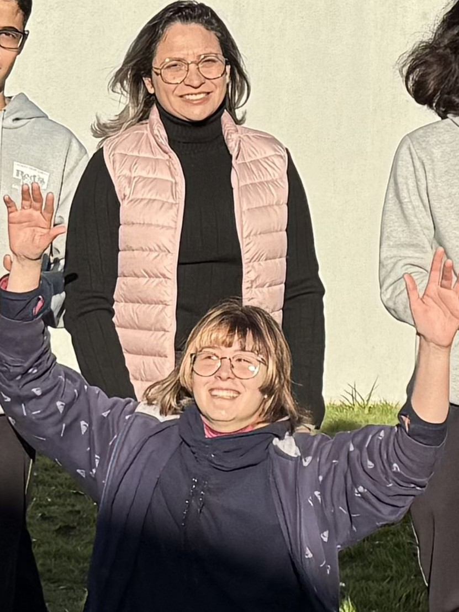
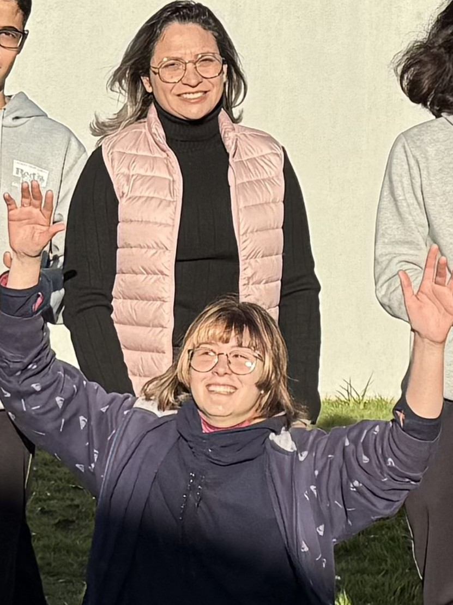

Ibaiti Mais Verde
O projeto "Verde que Alimenta" será desenvolvido em etapas claras e interconectadas, garantindo a participação ativa dos alunos, a orientação dos professores e o envolvimento da comunidade. O objetivo é criar um processo educativo e prático que resulte na implementação bem-sucedida das árvores frutíferas nativas e da horta comunitária.
O Colégio Estadual Antônio Martins de Mello, pilar da comunidade de Ibaiti, tem um papel fundamental na formação de seus alunos e na promoção de valores essenciais para o futuro. Esta iniciativa surge da crescente necessidade de conscientizar e engajar nossa comunidade escolar e local sobre a importância vital da arborização urbana e da conservação da biodiversidade, especialmente em um município rico como Ibaiti, localizado no coração do Paraná.
A arborização vai muito além da estética. Árvores e espaços verdes são essenciais para a saúde e o bem-estar da população, atuando como verdadeiros filtros naturais que melhoram a qualidade do ar ao absorver dióxido de carbono e liberar oxigênio. Elas ajudam a regular a temperatura ambiente, combatendo as ilhas de calor e proporcionando conforto térmico, o que é especialmente relevante em climas mais quentes. Além disso, a presença de árvores reduz a poluição sonora, aumenta a umidade do ar e contribui para a recarga de lençóis freáticos, auxiliando na gestão da água da chuva e na prevenção de enchentes.
Ao focar no plantio de árvores frutíferas nativas da região de Ibaiti, o projeto ganha uma dimensão ainda mais estratégica. Essas espécies, adaptadas ao nosso clima e solo, prosperam com mais facilidade e requerem menos manutenção. Mais importante, elas são cruciais para a manutenção da fauna local, servindo como fonte de alimento para pássaros, abelhas e outros polinizadores, elementos essenciais para o equilíbrio dos ecossistemas. A presença de uma fauna diversificada enriquece o ambiente e contribui para um cenário urbano mais vibrante e saudável.
Em suma, o projeto "Verde que Alimenta" representa um compromisso do Colégio Estadual Antônio Martins de Mello com um futuro mais verde e próspero para Ibaiti. É uma iniciativa prática e educativa que visa não apenas embelezar e revitalizar nossos espaços, mas também cultivar a consciência ambiental, a responsabilidade cidadã e o senso de comunidade em nossos alunos. Buscamos o apoio da Câmara de Vereadores para que esta proposta, que nasceu em nossa escola, possa florescer e inspirar toda a cidade de Ibaiti.
 
